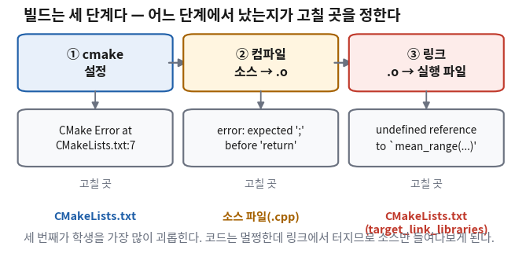
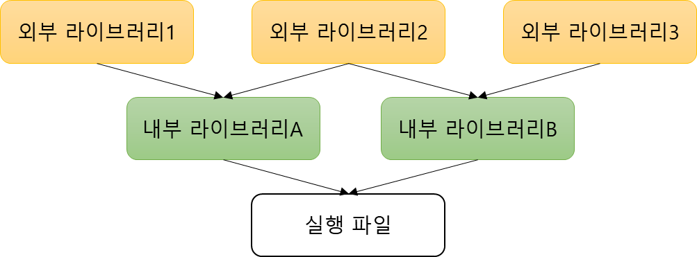
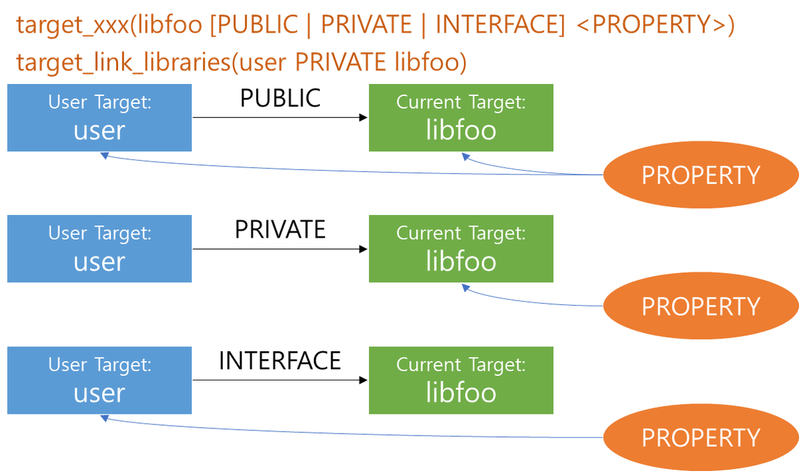

클래스를 만들면서 선언은 헤더(.hpp)에, 정의는 소스(.cpp)에 나눠 두었다.
그 순간 파일이 둘이 됐다.
그리고 그때까지 잘 쓰던 g++ main.cpp 한 줄이 안 먹기 시작한다.
오늘은 그 불편을 그대로 겪는 것에서 시작한다.
도구를 먼저 소개하지 않는다. 손으로 하다가 안 되는 지점을 확인한 다음,
그 자리를 메우려고 만들어진 도구를 꺼낸다.
그 도구가 CMake이고, ROS 2의 빌드도 결국 CMake다.
이 회차가 중요한 이유는 다른 회차와 종류가 다르다.
보통 AI가 주는 코드의 문제는 맞지만 둔한 코드다.
그런데 CMakeLists.txt에서는 아예 낡은 방식이 온다.
CMake는 2014년 무렵 사고방식이 통째로 바뀌었는데, 인터넷에 남아 있는 문서는 그 전 것이 훨씬 많기 때문이다.
그래서 오늘은 「낡았는지 아닌지」를 한 줄로 가르는 법을 손에 쥐고 나간다.
한 장 요약 — 학기가 끝나도 이 표만 남으면 된다
무엇을 먼저 볼지: 오른쪽 「그러면 어디를 고치나」 열만 읽어도 학기 내내 쓴다.
화면에 이게 보이면
어느 단계에서 난 것
그러면 어디를 고치나
CMake Error at CMakeLists.txt:7
① cmake 설정
CMakeLists.txt의 7번째 줄 — 줄 번호를 알려 준다
error: expected ‘;’ before …
② 컴파일
소스 파일 — 경로와 줄:칸 번호를 알려 준다
undefined reference to …
③ 링크
CMakeLists.txt의 target_link_libraries — 소스가 아니다
gmake[2]: *** … Error 1
—
읽지 않는다. 위쪽 첫 error: 줄로 올라간다
include_directories(...)
—
낡은 CMake다.target_include_directories로 바꿔 달라고 한다
해석: 세 번째 줄이 학생을 가장 많이 괴롭힌다.
코드는 멀쩡한데 링크에서 터지니 소스만 몇 시간씩 들여다본다.
고칠 곳은 소스가 아니라 CMakeLists.txt다.
이 표에서 외울 것은 명령어 이름이 아니라 「메시지 모양 → 고칠 파일」 대응 하나다.
① 파일이 둘이 되면 한 줄로는 안 된다 🔴 사람이 한다
지금 있는 파일 세 개
라이다가 준 거리 값 중 쓸 만한 것만 골라 평균을 내는 함수 하나를 만들었다고 하자.
선언은 헤더에, 정의는 소스에, 그것을 쓰는 쪽은 main.cpp에 있다.
scan_tools/
├── CMakeLists.txt
├── include/
│ └── scan_math.hpp ← 선언: "이런 함수가 있다"
└── src/
├── scan_math.cpp ← 정의: "그 함수는 이렇게 동작한다"
└── main.cpp ← 쓰는 쪽
기존 방법으로 해 보면 — 두 번 막힌다
여태 쓰던 대로 main.cpp 하나만 넘겨 본다. 첫 번째 벽은 헤더를 못 찾는 것이다.
$ g++ -std=c++17 src/main.cpp src/scan_math.cpp -o scan_app
src/main.cpp:1:10: fatal error: scan_math.hpp: No such file or directory
1 | #include "scan_math.hpp"
| ^~~~~~~~~~~~~~~
compilation terminated.
include/ 폴더를 어디서 찾을지 아무도 알려 주지 않았다.
-Iinclude를 붙여 그 자리를 알려 주고, 이번엔 main.cpp 하나만 넘겨 본다.
두 번째 벽이 나온다.
$ g++ -std=c++17 -Iinclude src/main.cpp -o scan_app
/usr/bin/ld: /tmp/ccEpSK90.o: in function `main':
main.cpp:(.text+0xca): undefined reference to `mean_range(std::vector<float, std::allocator<float> > const&, float, float)'
collect2: error: ld returned 1 exit status
문법 오류가 아니다.main.cpp는 문제없이 컴파일됐다.
헤더가 "mean_range라는 함수가 있다"고 약속해 줬으니까.
그런데 그 약속을 실제로 지키는 코드(scan_math.cpp)를 아무도 넘겨 주지 않았다.
선언은 있는데 정의가 없다는 것이 이 메시지의 뜻이다.
둘 다 넘기면 그제야 된다.
$ g++ -std=c++17 -Iinclude src/main.cpp src/scan_math.cpp -o scan_app
$ ./scan_app
유효값 평균 = 1.373 m
🆕 이 화면에서 처음 나오는 것
-I<폴더> (대문자 아이)
#include "..."로 찾는 헤더가 어느 폴더에 있는지 컴파일러에게 알려 주는 옵션이다.
여기서는 scan_math.hpp가 include/ 안에 있어서 -Iinclude를 붙였다.
.o (목적 파일, object file)
소스 파일 하나를 기계어로 바꿔 놓은 중간 결과물이다.
아직 실행 파일이 아니다. 위 메시지의 /tmp/ccEpSK90.o가 그것이고,
컴파일러가 임시로 만들었다가 지운다.
undefined reference to `…'
링크(연결) 단계에서 나오는 메시지다.
"이 이름을 쓰겠다는 약속은 봤는데 실제 내용을 어디서도 못 찾았다"는 뜻이다.
여기서는 scan_math.cpp를 안 넘겨서 났다.
그래서 빌드는 세 단계다
위에서 두 번 막힌 자리가 사실은 서로 다른 단계다.
어느 단계에서 났는지가 곧 고칠 파일을 정한다. 오늘 이 그림 하나만 가져가도 된다.

세 칸 아래의 「고칠 곳」 줄을 본다.
①과 ③은 고칠 파일이 CMakeLists.txt로 같은데, 화면에 나오는 메시지는 전혀 다르게 생겼다.
단계
무슨 일을 하나
여기서 나는 대표 메시지
① 설정 (cmake)
무엇을 무엇으로 만들지 계획표를 짠다
CMake Error at CMakeLists.txt:7
② 컴파일
소스 한 개씩.o로 바꾼다. 문법을 여기서 본다
error: expected ‘;’ …
③ 링크
.o들을 이어 붙여 실행 파일 하나로 만든다
undefined reference to …
해석: ②는 파일을 하나씩 따로 본다. 그래서 main.cpp만 컴파일할 때는
mean_range가 없다는 사실을 눈치채지 못한다. 헤더가 "있다"고 약속했으니 그대로 믿는다.
약속이 지켜졌는지 확인하는 것은 ③의 일이다.
이것이 "코드는 멀쩡한데 링크에서 터진다"의 정체다.
파일이 많아지면 이 일이 감당이 안 된다
지금은 소스가 둘이라 손으로 적을 만하다. 그런데 실제 프로젝트는 이렇게 생겼다.

화살표를 아래에서 위로 읽는다. 실행 파일 하나를 만들려면
내부 라이브러리 둘이 먼저 있어야 하고, 그 둘은 다시 외부 라이브러리 셋에 기대고 있다.
이 순서를 사람이 손으로 적는 것이 빌드 시스템이 생긴 이유다.탭 문자 하나가 40년을 갔다 — 만든 사람도 실수인 줄 알고 있었다 (10분 · 건너뛰어도 됩니다)
① 1976년, 벨 연구소
스튜어트 펠드먼(Stuart Feldman)은 동료 하나가 프로그램을 고쳐 놓고 다시 빌드하는 것을 잊어서
하루를 통째로 날린 것을 봤다. 고친 코드가 실행 파일에 반영되지 않았는데,
그 사실을 모른 채 하루 종일 엉뚱한 곳에서 원인을 찾은 것이다.
② 그래서 무엇을 했나
그는 도구를 하나 만들었다. make다.
생각은 단순하다. "뭐가 뭐에 의존하는지 미리 적어 두면, 바뀐 것만 다시 만들어 준다."
의존 관계와 만드는 방법을 Makefile이라는 파일에 적어 두는 방식이다.
③ 여기가 재미있다 — 열두 명 때문에
Makefile의 규칙 줄은 맨 앞이 반드시 탭 문자여야 한다.
스페이스 여덟 칸은 안 된다. 눈으로는 구별이 안 되는데 오류가 난다.
만든 사람 본인도 그게 나쁜 설계라는 것을 알고 있었다. 나중에 이렇게 설명했다.
"make를 만들고 몇 주 만에 이미 열두 명의 친구가 쓰고 있었다.
'1열의 탭'이 나쁜 생각이라는 걸 알고 있었지만,
내 사용자들을 방해하고 싶지 않았다."
열두 명을 배려하느라 그 뒤 수천만 명이 그 대가를 치렀다.
소프트웨어에서 초기 결정이 굳어 버리는 방식의 교과서적인 사례다.
④ 그래서 지금 우리 손에 남은 것
운영체제마다 Makefile이 달라지는 문제가 다음에 왔고,
2000년 미국 국립의학도서관이 의료 영상 라이브러리(ITK)를 만들면서
"윈도우·리눅스·맥에서 다 되는 빌드 방법"을 요구했다.
키트웨어(Kitware)라는 작은 회사가 그것을 만들었고, 그것이 CMake다 —
우리가 make 문법을 안 배워도 되는 이유가 여기 있다.
⑤ 숫자로 확인한다
열두 명 — 설계를 못 바꾼 이유의 전부다. 그때 사용자가 열두 명이었다.
40년 넘게 — 1976년에 정해진 탭 규칙은 지금도 그대로다. 바꾸면 옛날 Makefile이 전부 깨진다.
1976 → 2003, 27년 — 펠드먼은 make를 만든 지 27년 뒤인 2003년에
이 공로로 ACM 소프트웨어 시스템 상을 받았다.
13줄 → 명령 8줄 — 우리가 오늘 쓸 CMakeLists.txt는 전체 13줄인데
빈 줄 3개와 주석 2줄을 빼면 실제 명령은 여덟 줄뿐이다.
그 여덟 줄이 라이브러리 하나와 실행 파일 하나를 만든다.
네 단계 — 그 여덟 줄로 cmake --build를 돌리면
[ 25%] → [ 50%] → [ 75%] → [100%]로
네 단계가 지나간다. 손으로 치면 명령 네 줄에 해당한다.
잰 곳: 컨테이너(우분투 24.04.4 LTS, g++ 13.3.0, CMake 3.28.3). 줄 수는 examples/l09_cmake/good/CMakeLists.txt를 센 것이다.
출처: Wikipedia — Make (software), Stuart Feldman
출처: cmake.org/history · Kitware, "Celebrating 20 Years of CMake"
② 여덟 줄이 그 일을 대신한다 🟡 맡기되 검사
위에서 손으로 하던 일 — "헤더는 여기 있고, 이 소스와 저 소스를 이어 붙여라" —
을 그대로 적어 놓은 파일이 CMakeLists.txt다.
아래가 이 회차에서 계속 쓸 프로젝트 전체다.
CMakeLists.txt — 전체 13줄
cmake_minimum_required(VERSION 3.16)
project(scan_tools CXX)
set(CMAKE_CXX_STANDARD 17)
set(CMAKE_CXX_STANDARD_REQUIRED ON)
# ① 라이브러리를 하나 만든다
add_library(scan_math src/scan_math.cpp)
target_include_directories(scan_math PUBLIC include)
# ② 실행 파일을 만들고 ①을 붙인다
add_executable(scan_app src/main.cpp)
target_link_libraries(scan_app PRIVATE scan_math)
🆕 이 파일에서 처음 나오는 것 (1) — 무엇을 만들지 정하는 줄
cmake_minimum_required(VERSION 3.16)
이 파일을 어느 버전의 CMake 기준으로 썼는지 밝힌다.
여기서는 3.16으로 뒀다 — 내가 둔 가정이다. 우분투 24.04에 깔린 CMake는 3.28이라 넉넉히 넘는다.
project(scan_tools CXX)
프로젝트 이름과 쓰는 언어를 정한다. CXX가 C++을 뜻한다.
여기서는 C는 안 쓰므로 CXX만 적어 컴파일러 검사 시간을 줄였다.
add_library(scan_math src/scan_math.cpp)
라이브러리 하나를 만들라는 뜻이다. 이름은 scan_math, 재료는 소스 한 개다.
여기서는 거리 계산 함수를 실행 파일과 떼어 놓는 데 썼다.
add_executable(scan_app src/main.cpp)
실행 파일 하나를 만들라는 뜻이다. 이름은 scan_app이다.
여기서 만들어진 이름 scan_app·scan_math를 CMake에서는 타깃(target)이라 부른다.
아래 target_으로 시작하는 명령은 전부 이 이름 하나를 골라 설정을 거는 것이다.
🆕 이 파일에서 처음 나오는 것 (2) — 타깃에 설정을 거는 줄
target_include_directories(scan_math PUBLIC include)
아까 손으로 붙이던 -Iinclude가 이 줄이다.
차이는 「누구에게」가 붙었다는 것이다 — scan_math라는 타깃 하나에만 건다.
여기서 PUBLIC으로 둔 이유는 아래 ⑤절에서 설명한다.
target_link_libraries(scan_app PRIVATE scan_math)
아까 손으로 scan_math.cpp를 같이 넘기던 일이 이 줄이다.
이 줄이 없으면 undefined reference가 난다 — 아래 ⑦절 ③번이 정확히 그 경우다.
libscan_math.a
add_library가 만들어 내는 파일 이름이다.
.o들을 한 봉지에 묶어 놓은 것이고, 앞의 lib과 뒤의 .a는 리눅스의 관례라
CMake가 알아서 붙인다. 우리가 적은 이름은 scan_math뿐이다.
소스 세 개 — 이 코드가 실제로 도는 것이다
include/scan_math.hpp — 선언만 있다
#ifndef SCAN_MATH_HPP_
#define SCAN_MATH_HPP_
#include <vector>
// 유효한 거리 값들의 평균을 낸다. 하나도 없으면 -1 을 돌려준다.
float mean_range(const std::vector<float> & ranges, float lo, float hi);
#endif
src/scan_math.cpp — 정의가 여기 있다
#include "scan_math.hpp"
#include <cmath>
float mean_range(const std::vector<float> & ranges, float lo, float hi)
{
double sum = 0.0; int cnt = 0;
for (const float r : ranges) {
if (std::isfinite(r) && r >= lo && r <= hi) { sum += r; ++cnt; }
}
return (cnt > 0) ? static_cast<float>(sum / cnt) : -1.0f;
}
🆕 이 코드에서 처음 나오는 것
for (const float r : ranges)
배열을 처음부터 끝까지 하나씩 도는 문법이다(범위 for).
인덱스 i를 직접 다루지 않으므로 범위를 벗어날 자리가 없다.
여기서는 거리 값 일곱 개를 차례로 r에 받아 검사하는 데 썼다.
std::isfinite(r)
그 값이 보통 숫자인지 묻는다. 무한대(inf)나 「숫자가 아님」(NaN)이면 거짓이다.
라이다는 측정에 실패한 방향을 그런 값으로 채워 보내므로, 여기서는 그것부터 걸러 냈다.
static_cast<float>(sum / cnt)
값의 타입을 일부러 바꾼다는 표시다.
여기서는 double로 더한 합을 함수가 돌려줄 float으로 줄이는 데 썼다.
이렇게 적어 두면 "실수로 줄어든 것이 아니라 내가 줄인 것"이 코드에 남는다.
제대로 다루는 곳: 12회(컨테이너와 범위 for) · 13회(isfinite와 라이다의 NaN)
중괄호 안에 초깃값을 그대로 나열해서 만드는 방식이다.
여기서는 라이다가 준 거리 일곱 개를 흉내 내는 데 썼다. 값 일곱 개짜리 배열이 그 자리에서 만들어진다.
INFINITY / NAN
각각 무한대와 「숫자가 아님」을 뜻하는 이름이다(<cmath>에 들어 있다).
여기서는 라이다가 실패한 방향을 일부러 섞어 넣는 데 썼다.
위 std::isfinite가 이 둘을 걸러 낸다.
std::printf("… %.3f m\n", …)
서식을 정해 화면에 찍는다. %.3f가 소수점 아래 셋까지라는 뜻이라
출력이 1.373으로 나온다.
해석: 값 일곱 개 중 0.10(너무 가까움)·INFINITY·9.90(너무 멂)·NAN 넷이 버려지고
0.83·1.24·2.05 셋이 남는다. 셋의 평균이 1.373 m다.
이 숫자를 기억해 두면 실습에서 「제대로 고쳐졌는지」를 눈으로 판단할 수 있다.
③ 빌드는 명령 두 줄이다 🟢 맡긴다
그때 이걸 친다 — ① 설정
$ cmake -S good -B good/build
-- The CXX compiler identification is GNU 13.3.0
-- Detecting CXX compiler ABI info
-- Detecting CXX compiler ABI info - done
-- Check for working CXX compiler: /usr/bin/c++ - skipped
-- Detecting CXX compile features
-- Detecting CXX compile features - done
-- Configuring done (0.2s)
-- Generating done (0.0s)
-- Build files have been written to: /work/l09_cmake/good/build
출력을 이렇게 읽는다: 마지막 두 줄만 본다.
Generating done이 나오면 계획표가 만들어진 것이고,
Build files have been written to: 뒤가 그 계획표가 놓인 폴더다.
여기서는 아직 컴파일이 한 줄도 일어나지 않았다.
그때 이걸 친다 — ② 빌드
$ cmake --build good/build
[ 25%] Building CXX object CMakeFiles/scan_math.dir/src/scan_math.cpp.o
[ 50%] Linking CXX static library libscan_math.a
[ 50%] Built target scan_math
[ 75%] Building CXX object CMakeFiles/scan_app.dir/src/main.cpp.o
[100%] Linking CXX executable scan_app
[100%] Built target scan_app
출력을 이렇게 읽는다: 앞의 백분율이 아니라 줄머리의 동사를 본다.
Building이 컴파일이고 Linking이 링크다. 둘이 번갈아 나온다.
줄
무슨 일이 일어났나
만들어진 것
[ 25%] Building … scan_math.cpp.o
소스 하나를 컴파일했다
scan_math.cpp.o
[ 50%] Linking … libscan_math.a
.o를 라이브러리로 묶었다
libscan_math.a
[ 75%] Building … main.cpp.o
나머지 소스를 컴파일했다
main.cpp.o
[100%] Linking … scan_app
둘을 이어 붙였다
scan_app (실행 파일)
해석: 명령 두 줄이 네 단계를 대신했다.
손으로 하면 소스마다 컴파일 한 번씩, 라이브러리로 묶기 한 번, 링크 한 번을 순서 틀리지 않게 쳐야 한다.
소스가 스무 개면 그 줄이 스물두 줄이 된다. 줄 수가 아니라 「순서를 안 틀린다」가 이득이다.
그때 이걸 친다 — ③ 실행
$ ./good/build/scan_app
유효값 평균 = 1.373 m
$ ls good/build
CMakeCache.txt CMakeFiles cmake_install.cmake libscan_math.a Makefile scan_app
build/ 안에 libscan_math.a와 scan_app이 실제로 생겼다.
나머지는 CMake가 쓰는 부산물이라 통째로 지워도 된다 — 그래서 build/는 git에 올리지 않는다.
🆕 이 명령에서 처음 나오는 것
cmake -S <소스 폴더> -B <빌드 폴더>
설정 단계다. -S가 CMakeLists.txt가 있는 곳,
-B가 결과물을 쏟아 놓을 곳이다.
여기서는 good/build로 따로 뺐다 — 소스 폴더를 부산물로 더럽히지 않기 위해서다.
cmake --build <빌드 폴더>
실제로 만드는 단계다. 설정 때 정해진 계획표대로 컴파일과 링크를 돌린다.
make를 직접 치는 것과 같은 일인데, 운영체제가 달라져도 이 명령은 같다.
include/ 에 헤더, src/ 에 소스가 있는 C++17 프로젝트야. CMakeLists.txt 를 만들어 줘. 조건은 세 가지야. ① 헤더를 쓰는 부분은 include_directories 말고 target_include_directories 로 걸어 줘. ② 계산 부분은 add_library 로 따로 빼고 실행 파일에 target_link_libraries 로 붙여 줘. ③ 빌드 폴더는 build/ 로 분리해서 cmake -S . -B build 로 되게 해 줘.
④ 낡은 CMake는 한 줄만 보면 알아챌 수 있다 🟡 맡기되 검사
언제 이게 필요해지나
AI에게 CMakeLists.txt를 만들어 달라고 하면 대개 돌아가는 파일이 온다.
빌드도 되고 실행도 된다. 그래서 그냥 쓰게 된다.
문제는 그 파일이 2014년 이전 방식일 때가 많다는 것이다.
AI가 보통 주는 코드 🔴
include_directories(include) # ← 여기가 문제다
link_directories(lib) # ← 같은 종류의 문제다
add_executable(robot main.cpp)
target_link_libraries(robot mylib)
무엇이 문제인가
include_directories(include)는 이 아래에서 만들어지는 모든 타깃에 그 폴더를 걸어 버린다.
지금 만드는 것 하나에만 걸린 것이 아니다.
무엇이 걸리나
왜 문제인가
거는 대상이 안 적혀 있다
누구에게 거는지가 코드에 없다. 타깃이 열 개면 열 개 전부에 걸린다
지울 수가 없다
한 타깃만 빼고 싶어도 뺄 방법이 없다. 폴더 전체에 이미 걸렸다
이름이 겹친다
붙이는 라이브러리가 늘어날수록 같은 이름의 헤더를 엉뚱한 폴더에서 집어 온다
target_link_libraries(robot mylib)에 키워드가 없다
PRIVATE·PUBLIC을 안 적었다. 옛 문법이라 통과는 되지만 전파 범위가 정해지지 않는다
이렇게 말하면 된다
이 CMakeLists.txt 에 include_directories 나 link_directories 가 있으면 전부 target_include_directories 와 target_link_libraries 로 바꿔 줘. target_link_libraries 에는 PRIVATE / PUBLIC 을 반드시 붙이고, 왜 그 쪽을 골랐는지 한 줄로 알려 줘.
받은 코드
add_executable(robot main.cpp)
target_include_directories(robot PRIVATE include) # ← 대상마다 따로
target_link_libraries(robot PRIVATE mylib) # ← 전파 범위를 밝힌다
⚠️ 한 줄 판별법 — 오늘 가져갈 것이 이것 하나여도 된다
받은 CMakeLists.txt에서 include_directories 또는 link_directories를 찾는다.
보이면 낡은 방식이다. 앞에 target_이 붙어 있으면 지금 방식이다.
한 단어 차이인데 하는 일이 다르다.
왜 AI가 여기서 유독 약한가: CMake는 2014년 무렵 「전역 설정」에서 「타깃 중심」으로
사고방식이 통째로 바뀌었다. 그런데 인터넷에 쌓인 예제와 블로그 글은 그 이전 것이 훨씬 많다.
AI는 흔한 것을 재현하므로, 요구하지 않으면 낡은 쪽이 나온다.
이것은 AI가 틀린 것이 아니라 「가장 흔한 답」을 고른 것이다. 그래서 지적하면 바로 고친다.
쓸 때 / 안 쓸 때
이걸 쓴다
언제
수준
target_include_directories(<타깃> …)
기본값. 헤더 위치를 알려 줄 때는 항상 이것
[요구]
target_link_libraries(<타깃> PRIVATE …)
기본값. 라이브러리를 붙일 때는 항상 이것
[요구]
include_directories(...)
안 쓴다. 남의 옛 코드를 읽을 때 알아보기만 하면 된다
[판단]
set(CMAKE_CXX_STANDARD 17)
프로젝트 전체가 같은 표준을 쓸 때는 이대로 둔다. 우리 파일이 그 경우다
[알아보기]
한 줄 점검
받은 CMakeLists.txt에 target_이 안 붙은 include_directories가 남아 있지 않나?
⑤ PRIVATE가 기본값이다 🟡 맡기되 검사
target_으로 시작하는 명령에는 대상 이름 다음에 대문자 단어 하나가 붙는다.
이것이 "이 설정을 나만 쓸 것인가, 나를 쓰는 쪽까지 물려줄 것인가"를 정한다.

오른쪽 PROPERTY 타원에서 나가는 화살표가 몇 개인지만 본다.
PUBLIC은 둘(자기 자신 + 쓰는 쪽), PRIVATE는 하나(자기 자신만),
INTERFACE는 하나(쓰는 쪽만)다.
🆕 이 그림에서 처음 나오는 것
PRIVATE
이 설정은 나만 쓴다. 나를 가져다 쓰는 쪽에는 안 물려준다.
여기서는 scan_app이 scan_math를 붙일 때 썼다 —
scan_app은 최종 실행 파일이라 누구도 이것을 가져다 쓰지 않기 때문이다.
PUBLIC
나도 쓰고, 나를 쓰는 쪽에도 물려준다.
여기서는 scan_math의 include 폴더에 썼다 —
scan_math.hpp는 main.cpp도 #include해야 하기 때문이다.PRIVATE로 바꾸면 main.cpp가 헤더를 못 찾는다.
INTERFACE
나는 안 쓰고 나를 쓰는 쪽만 쓴다.
헤더만 있고 소스가 없는 라이브러리에 쓴다. 이 과목에서 우리가 쓸 일은 없다.
남의 CMakeLists.txt에서 보면 "아, 헤더만 있는 것이구나"로 읽으면 된다.
해석: 셋을 다 외우려 하지 않는다. 규칙은 하나다 — 고민되면 PRIVATE.
그러다 헤더를 못 찾는 오류가 나면 그 라이브러리의 헤더 줄만PUBLIC으로 올린다.
우리 파일에서 PUBLIC이 딱 한 줄인 이유가 그것이다.
이 CMakeLists.txt 에서 PUBLIC 으로 둔 줄과 PRIVATE 로 둔 줄이 각각 왜 그런지 한 줄씩 설명해 줘. 그리고 둘을 서로 바꾸면 무엇이 깨지는지도 알려 줘. 파일은 고치지 말고 설명만 해 줘.
⑥ 빌드가 터지면 먼저 「어느 단계였나」를 가른다 🔴 사람이 한다
빌드가 실패하면 화면에 수십 줄이 쏟아진다.
학생이 가장 많이 하는 실수는 마지막 줄부터 읽는 것이다.
마지막 줄은 거의 언제나 gmake: *** [Makefile:91: all] Error 2인데,
이 줄에는 아무 정보가 없다. "아래쪽에서 뭔가 실패했다"는 말뿐이다.
gmake로 시작하는 줄은 "내 밑에서 뭔가 실패했다"는 보고일 뿐이다.
세 줄이 나오는 이유는 실패가 아래에서 위로 세 번 전달됐기 때문이다.
위로 올라가서 첫 번째 error: 줄을 찾는다. 거기에만 정보가 있다.
오류가 난 자리
무슨 뜻인가
어디를 고치나
cmake 단계
계획표 자체가 잘못됐다. 아직 컴파일은 시작도 안 했다
CMakeLists.txt — 줄 번호를 알려 준다
컴파일 단계 (error:)
코드 문법이 틀렸다
소스 파일 — 경로와 줄:칸 번호를 알려 준다
링크 단계 (undefined reference)
선언만 있고 정의를 못 찾았다
CMakeLists.txt의 target_link_libraries — 소스가 아니다
해석: 세 번째 줄이 학생을 가장 많이 괴롭힌다.
메시지에 소스 파일 이름(main.cpp)이 찍혀 나오기 때문에 소스를 고치러 간다.
그런데 소스는 멀쩡하다. 고칠 곳은 CMakeLists.txt다.
이 한 줄을 아는 것과 모르는 것이 한 학기 동안 몇 시간 차이를 낸다.
⑦ 오류 3종을 직접 재현해 읽어 본다 🔴 사람이 한다
아래 셋은 같은 프로젝트를 한 군데씩만 망가뜨려서 실제로 얻은 화면이다.
한 글자도 고치지 않았다.
잰 곳: 컨테이너(우분투 24.04.4 LTS, g++ 13.3.0, CMake 3.28.3)
① cmake 단계 — 파일 이름을 mian.cpp로 잘못 적었다
$ cmake -S bad_cmake -B bad_cmake/build
-- The CXX compiler identification is GNU 13.3.0
-- Detecting CXX compiler ABI info
-- Detecting CXX compiler ABI info - done
-- Check for working CXX compiler: /usr/bin/c++ - skipped
-- Detecting CXX compile features
-- Detecting CXX compile features - done
-- Configuring done (0.2s)
CMake Error at CMakeLists.txt:7 (add_executable):
Cannot find source file:
src/mian.cpp
Tried extensions .c .C .c++ .cc .cpp .cxx .cu .mpp .m .M .mm .ixx .cppm
.ccm .cxxm .c++m .h .hh .h++ .hm .hpp .hxx .in .txx .f .F .for .f77 .f90
.f95 .f03 .hip .ispc
CMake Error at CMakeLists.txt:7 (add_executable):
No SOURCES given to target: scan_app
CMake Generate step failed. Build files cannot be regenerated correctly.
어느 줄을 보나:CMake Error at CMakeLists.txt:7 (add_executable) 한 줄이다.
파일 이름과 줄 번호가 그대로 나온다 — CMakeLists.txt의 7번째 줄, 그중에서도 add_executable 명령이다.
그 밑 src/mian.cpp가 못 찾은 파일 이름이다. main이 mian이 됐다.
나머지는 안 봐도 된다.Tried extensions 세 줄은 CMake가 시도해 본 확장자 목록이고,
두 번째 CMake Error(No SOURCES given)는 첫 번째의 후속 피해다.
소스를 하나도 못 찾았으니 타깃이 빈 것이다. 첫 번째를 고치면 같이 사라진다.
어느 줄을 보나:error:가 들어 있는 줄이다.
앞부분이 …/src/main.cpp:7:70인데, 이것이 파일 경로 · 7번째 줄 · 70번째 칸이다.
그 아래 ^ 표시가 정확히 그 칸을 가리키고, 그 밑에 컴파일러가 ;를 여기 넣으라고 직접 적어 준다.
눈여겨볼 것 하나: 이 화면에서 [ 50%] Built target scan_math까지는 성공했다.
라이브러리는 이미 만들어졌고 main.cpp 하나에서만 터진 것이다.
성공한 줄과 실패한 줄이 한 화면에 섞여 나온다는 것을 알아 두면 덜 당황한다.
③ 링크 단계 — target_link_libraries 줄을 통째로 빠뜨렸다
$ cmake --build bad_link/build
[ 25%] Building CXX object CMakeFiles/scan_math.dir/src/scan_math.cpp.o
[ 50%] Linking CXX static library libscan_math.a
[ 50%] Built target scan_math
[ 75%] Building CXX object CMakeFiles/scan_app.dir/src/main.cpp.o
[100%] Linking CXX executable scan_app
/usr/bin/ld: CMakeFiles/scan_app.dir/src/main.cpp.o: in function `main':
main.cpp:(.text+0xca): undefined reference to `mean_range(std::vector<float, std::allocator<float> > const&, float, float)'
collect2: error: ld returned 1 exit status
gmake[2]: *** [CMakeFiles/scan_app.dir/build.make:97: scan_app] Error 1
gmake[1]: *** [CMakeFiles/Makefile2:111: CMakeFiles/scan_app.dir/all] Error 2
gmake: *** [Makefile:91: all] Error 2
어느 줄을 보나:undefined reference to `mean_range(...)' 한 줄이다.
여기서 함정에 빠진다. 그 앞뒤로 main.cpp가 두 번 찍혀 있어서
소스를 고치러 가게 된다. 그런데 main.cpp는 문법이 완벽하다 —
[ 75%] Building … main.cpp.o 줄이 이미 성공했다는 증거다.
터진 곳은 [100%] Linking 다음이다. 이어 붙이는 단계에서 터졌다.mean_range의 실제 내용이 들어 있는 libscan_math.a를 아무도 넘겨 주지 않았다.
고칠 곳은 CMakeLists.txt이고, 넣을 줄은 한 줄이다.
이 한 줄을 되살리면 끝난다
target_link_libraries(scan_app PRIVATE scan_math)
⚠️ 이 셋 중 셋째만 성격이 다르다
①과 ②는 화면이 고칠 자리를 직접 짚어 준다. 파일 이름도, 줄 번호도 나온다.
그대로 가서 고치면 된다.
③은 다르다. 화면이 가리키는 파일과 고쳐야 할 파일이 다르다.
메시지에는 main.cpp가 나오는데 고칠 곳은 CMakeLists.txt다.
이 어긋남 때문에 셋째가 학생을 가장 오래 붙잡는다.undefined reference를 보면 소스를 열기 전에 CMakeLists.txt부터 연다는 습관을 만든다.
⑧ 빌드 오류는 통째로 붙여 넣어도 된다 — 조건이 하나 있다 🟡 맡기되 검사
이 회차에서는 AI 활용을 권장한다. 빌드 오류는 AI가 특히 잘 푸는 종류다.
메시지가 정형화돼 있고, 인터넷에 같은 메시지가 수없이 쌓여 있기 때문이다.
화면을 통째로 복사해 붙여 넣는 것이 가장 빠르다.
아래는 빌드하다 나온 화면 전체야. 먼저 이게 cmake 설정 / 컴파일 / 링크 중 어느 단계에서 난 오류인지 한 줄로 말해 줘. 그다음 어느 파일 몇 번째 줄을 어떻게 고쳐야 하는지 알려 줘. 고친 파일 전체를 다시 주지 말고 바뀌는 줄만 보여 줘.
해석: 조건은 "어느 단계였는지 한 줄로 말하게 하는 것" 하나다.
이것이 왜 중요한가 하면, 답만 받으면 다음에 또 못 고치기 때문이다.
같은 오류는 학기 내내 다시 나온다. 단계 이름을 세 번만 적어 보면 그다음부터는 화면만 보고 안다.
HW2의 점수도 고친 결과가 아니라 이 한 줄에 붙는다.
⛔ 그래도 넘기면 안 되는 것
"빌드 안 되는데 알아서 다 고쳐 줘"라고 시키고 결과만 받는 것.
에이전트는 고치는 김에 CMakeLists.txt를 통째로 다시 쓰기도 한다.
그러면서 include_directories가 슬쩍 들어오고, 다음 주에 다른 오류로 돌아온다.
바뀐 줄만 받아서 눈으로 본다.
🧪 실습 — 오류 3종을 직접 내고 직접 고친다
🧪 실습 (약 35분) — HW2로 바로 이어집니다
알게 되는 것: 화면만 보고 어느 단계에서 났는지 가르는 감각.
명령어가 아니라 가르는 순서가 이 실습의 목표다.
준비물: WSL 터미널 한 칸, 배포된 l09_cmake 폴더(good·bad_cmake·bad_compile·bad_link 네 개),
g++와 cmake. 로봇도 ROS도 필요 없다.
절차
폴더를 받아 풀고 good부터 돌린다. cmake -S good -B good/build →
cmake --build good/build → ./good/build/scan_app.
유효값 평균 = 1.373 m가 나오는 것을 눈으로 확인한다. (5분)
cmake -S bad_cmake -B bad_cmake/build를 친다.
화면에서 CMakeLists.txt: 뒤의 숫자를 찾아 적는다.
그 줄을 열어 고친 뒤 다시 설정한다. (7분)
cmake --build bad_compile/build를 친다.
맨 아래가 아니라 위로 올라가서 첫 error: 줄을 찾는다.
파일:줄:칸을 적고 그 자리를 고친다. (7분)
cmake --build bad_link/build를 친다.
소스는 절대 열지 않는다.CMakeLists.txt만 보고 빠진 한 줄을 넣는다. (10분)
넷 다 cmake --build 후 실행해서 전부 1.373 m가 나오는지 확인한다. (3분)
세 오류 각각에 대해 「어느 단계였나 · 화면의 어느 줄을 보고 알았나」를 한 줄씩 적는다. (3분)
이렇게 되면 성공: 네 폴더 전부에서 유효값 평균 = 1.373 m가 찍힌다.
그리고 6번에 적은 세 줄이 실제로 그 단계와 맞는다.
$ ./bad_link/build/scan_app
유효값 평균 = 1.373 m
4번에서 소스를 열고 싶어질 것이다
undefined reference 메시지에 main.cpp가 두 번 나오기 때문이다.
거기서 참는 것이 이 실습 전체의 목적이다.
열어 봐야 아무것도 안 틀려 있다.
📄 HW2 — 고장난 CMake 프로젝트 고치기 🟡 맡기되 검사
실습에서 쓴 것과 다른 고장난 프로젝트 하나를 따로 배포한다.
거기에는 위 세 가지 중 두 가지가 동시에 들어 있다.
무엇을 먼저 볼지: 배점 열을 본다. 고친 결과보다 근거에 붙는 점수가 더 크다.
제출물
형식
배점
고친 CMakeLists.txt와 소스
폴더 전체를 압축. build/는 빼고 낸다
1점
오류마다 「어느 단계였나」
cmake 설정 / 컴파일 / 링크 중 하나를 고르고 한 줄
1점
그렇게 판단한 근거
화면의 어느 줄을 보고 알았는지 그 줄을 그대로 붙인다
0.5점
고친 뒤 실행 화면
유효값 평균 = … 이 나온 터미널을 글자로 붙인다
0.5점
AI 활용 기록
물어봤으면 주고받은 문장 그대로. 안 썼으면 "안 씀"
감점 없음
해석:AI에게 물어봐서 고쳐도 된다. 감점이 없다.
다만 「어느 단계였나」와 그 근거를 못 쓰면 절반이 날아간다.
고친 사람과 원인을 아는 사람은 다르고, 이 과목이 평가하는 것은 뒤쪽이다.
내기 전에 마지막으로 한 번 훑게 시킨다. 고치라고 하지 말고 목록만 받는다.
내 CMakeLists.txt 를 검사만 해 줘. 고치지 말고 걸리는 것만 목록으로 알려 줘. ① target_ 이 안 붙은 include_directories 나 link_directories 가 있나 ② target_link_libraries 에 PRIVATE / PUBLIC 이 빠진 곳이 있나 ③ 빌드 결과가 소스 폴더에 섞이게 돼 있나 ④ .gitignore 에 build/ 가 있나.
🤖 오늘 나온 프롬프트 모음
이럴 때
이렇게 말한다
프로젝트를 처음 만들 때
"include/ 에 헤더, src/ 에 소스가 있어. target_include_directories와 target_link_libraries만 써서 CMakeLists.txt 를 만들어 줘."
받은 파일이 낡아 보일 때
"include_directories나 link_directories가 있으면 전부 target_ 방식으로 바꿔 줘."
빌드가 터졌을 때
"이게 cmake 설정 / 컴파일 / 링크 중 어느 단계 오류인지 먼저 한 줄로 말해 줘. 그다음 바뀌는 줄만 보여 줘."
PRIVATE·PUBLIC이 헷갈릴 때
"이 target_link_libraries에 왜 PRIVATE를 골랐는지 한 줄로 알려 줘. PUBLIC이면 뭐가 달라지나?"
부산물이 소스에 섞였을 때
"빌드 결과가 소스 폴더에 섞이지 않게 -S . -B build 방식으로 바꾸고 .gitignore에 build/를 넣어 줘."
첫 줄은 "hello를 만들려면 hello.o가 있어야 한다"는 의존 관계다.
둘째 줄이 만드는 방법인데, 맨 앞이 반드시 탭 문자여야 한다.
스페이스 여덟 칸으로 바꾸면 missing separator라는 오류가 난다.
화면에서는 두 경우가 완전히 똑같이 보인다. 이야기 블록의 그 탭이 이것이다.
정적 라이브러리(.a)와 동적 라이브러리(.so)는 뭐가 다른가
add_library는 기본으로 정적 라이브러리를 만든다. 우리가 본 libscan_math.a가 그것이다.
무엇
언제 합쳐지나
결과
.a (정적)
링크할 때 실행 파일 안으로 복사돼 들어간다
실행 파일이 커지지만 혼자 돈다
.so (동적)
실행할 때 밖에서 불러 온다
실행 파일은 작지만 .so가 없으면 안 뜬다
add_library(scan_math SHARED src/scan_math.cpp)로 적으면 .so가 나온다.
ROS 2 패키지는 대부분 SHARED다 — 여러 노드가 같은 코드를 나눠 쓰기 때문이다.
이 과목에서 우리가 골라야 할 일은 없다. 나중에 남의 CMakeLists.txt에서 보면 알아보면 된다.
ROS 2에서는 이 파일이 어떻게 달라지나 (19회 예고)
ROS 2 패키지의 CMakeLists.txt도 지금 본 것과 뼈대가 같다.add_executable과 target_link_libraries가 그대로 나온다.
다르게 생긴 줄은 앞뒤에 붙는 몇 개뿐이다.
find_package(rclcpp REQUIRED) # 남이 만든 것을 찾아 온다
add_executable(my_node src/my_node.cpp)
ament_target_dependencies(my_node rclcpp)
install(TARGETS my_node DESTINATION lib/${PROJECT_NAME})
ament_package()
install(...) 줄이 없으면 ros2 run이 실행 파일을 못 찾는다.
지금은 모양만 봐 두면 된다. 19회에서 제대로 다룬다.
빌드 폴더를 왜 따로 빼나 — cmake .을 쓰지 않는 이유
옛날 예제에는 cmake .이 많이 나온다. 소스 폴더에서 바로 설정하는 방식이다.
그러면 CMakeCache.txt·CMakeFiles/·Makefile이 소스 옆에 그대로 쏟아진다.